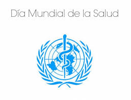
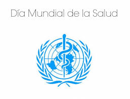

Día mundial de la salud


 1
1 2
2 3
3 4
4 5
5Día mundial de la salud
La OMS es la autoridad directiva y coordinadora en asuntos de sanidad internacional en el sistema de las Naciones Unidas.
Sus ámbitos de actividad principales son los siguientes:
- Enfermedades no transmisibles
- Enfermedades transmisibles
- Preparación, vigilancia y respuesta a las crisis Promoción de la salud a lo largo del ciclo de vida
- Sistemas de salud
- Servicios institucionales
Ello significa garantizar que todas las personas, en cualquier lugar, puedan tener acceso a servicios de salud esenciales y de calidad sin tener que pasar apuros económicos.
Los países que invierten en la CSU realizan una importante inversión en su capital humano. En los últimos decenios, la CSU ha surgido como una estrategia clave para avanzar hacia la consecución de otros objetivos relacionados con la salud y de desarrollo más amplios.


 
